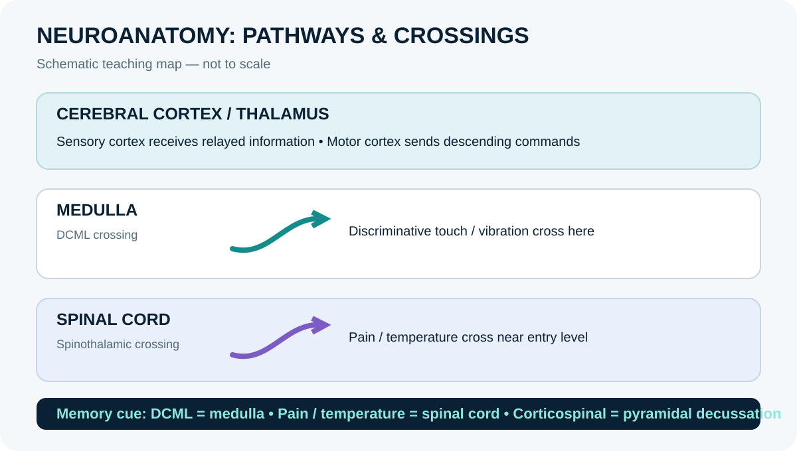

Organisation of the nervous system
The nervous system detects internal and external information, integrates it and coordinates responses. Anatomically, the central nervous system (CNS) comprises the brain and spinal cord; the peripheral nervous system (PNS) comprises nerves, ganglia and sensory receptors outside the CNS. Functionally, sensory (afferent) pathways carry information toward the CNS, while motor (efferent) pathways carry commands toward effectors. The somatic motor system controls skeletal muscle, while the autonomic nervous system regulates smooth muscle, cardiac muscle, glands and many internal functions. The autonomic system includes sympathetic, parasympathetic and enteric components. The enteric nervous system has extensive local circuits in the gastrointestinal tract and communicates with the CNS. Sensory systems include somatic sensation, special senses and visceral sensation. A pathway is often described by receptor, first-order neuron, relay or integration centre, descending or ascending tract where relevant, and target. A lesion may produce predictable patterns depending on where fibres cross, synapse or travel together.
Learning objectives
- Distinguish CNS from PNS.
- Explain afferent and efferent information flow.
- Compare somatic and autonomic motor systems.
High-yield study points
- CNS = brain and spinal cord; PNS = nerves, ganglia and peripheral receptors.
- Afferent pathways carry sensory information toward the CNS; efferent pathways carry commands away.
- Somatic motor pathways control skeletal muscle.
- Autonomic pathways regulate cardiac muscle, smooth muscle and glands.
- Sympathetic, parasympathetic and enteric divisions have distinct but interacting roles.
Clinical connection
Neurological examination tests sensory, motor, reflex and cranial nerve function to help localise dysfunction. A symptom pattern may suggest a site, but clinical diagnosis requires full assessment.
Memory aid / mnemonic
CNS = brain + spinal cord; PNS = nerves + ganglia. “Nucleus inside, ganglion outside; tract inside, nerve outside.”
Revision tip: recall the cue without looking, then explain the anatomical reason behind it.
Check your understanding
- What structures form the central nervous system?
Reveal answer
The brain and spinal cord.
- What is the key distinction between a nucleus and a ganglion in standard neuroanatomical usage?
Reveal answer
A nucleus is a collection of neuronal cell bodies in the CNS; a ganglion is a collection of neuronal cell bodies in the PNS.
- What is a tract?
Reveal answer
A bundle of axons within the CNS.
Visual map: major divisions of the nervous system

Further reading
OpenStax, Anatomy and Physiology 2e — nervous-system organisation, central nervous system and peripheral nerves.